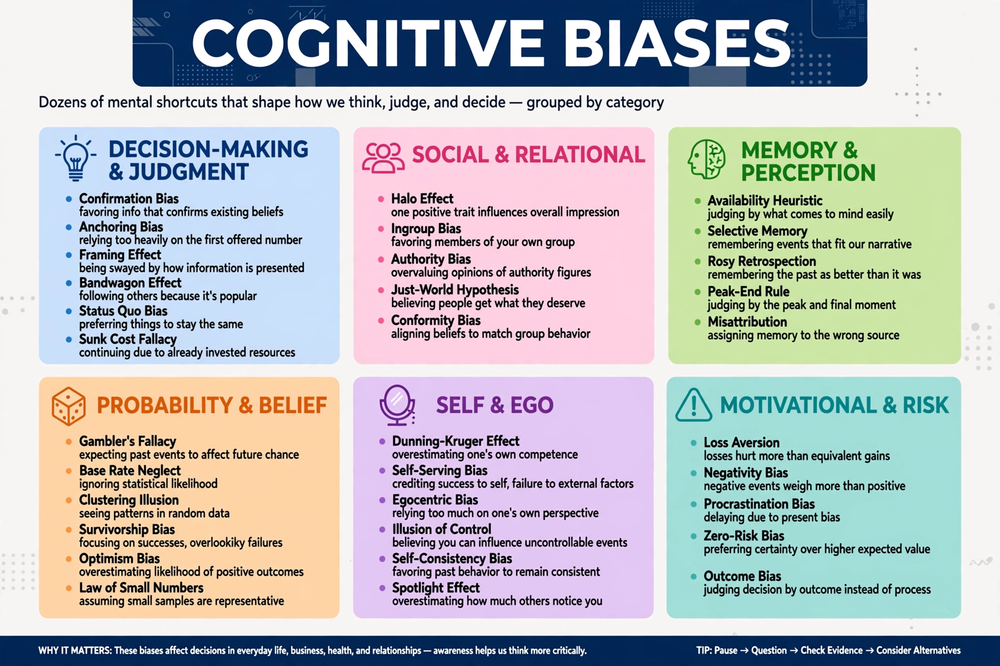

Cognitive bias

A cognitive bias is a systematic pattern of deviation from norm or rationality in judgment, whereby inferences about other people and situations may be drawn in an illogical fashion. Individuals create their own "subjective social reality" from their perception of the input; this constructed reality, rather than objective input, may dictate their behaviour. Cognitive biases may thus lead to perceptual distortion, inaccurate judgment, illogical interpretation, or what is broadly called irrationality.
Overview
The study of cognitive biases grew out of the heuristics and biases programme of Amos Tversky and Daniel Kahneman in the 1970s, which demonstrated that people use simplifying mental shortcuts that are economical most of the time but produce severe and systematic errors in specific conditions. Well over a hundred biases have since been named, and catalogues continue to grow. Some biases concern memory — memories are reconstructed and can be distorted by the peak–end rule, hindsight, or self-serving editing; some concern attention and information selection, as in confirmation bias, the tendency to search for and recall information that confirms one's existing beliefs; others concern probability and decision, such as loss aversion and the sunk cost fallacy.
Notable examples
- Anchoring — over-reliance on the first piece of information encountered.
- Availability heuristic — overestimating the likelihood of events that are easily recalled.
- Confirmation bias — favouring information consistent with prior beliefs.
- Hindsight bias — the "knew-it-all-along" effect after outcomes are known.
- Fundamental attribution error — over-attributing others' behaviour to disposition and under-weighting situation.
- Self-serving bias — attributing successes internally and failures externally.
- Dunning–Kruger effect — low-ability individuals overestimating their competence.
- Status quo bias and loss aversion — preferring the current state and weighting losses more than equivalent gains.
- Framing effect — drawing different conclusions from logically equivalent descriptions of the same choice.
Explanations and practical significance
Explanations for biases include information-processing limitations of the brain, motivational influences such as self-image and social approval, and the view — pressed by researchers on ecological rationality — that many "biases" are adaptive responses misclassified by laboratory norms. Attempts at debiasing include considering the opposite, base-rate training, checklists, and decision hygiene. Whatever their ultimate explanation, biases have documented consequences in medicine, law, finance, hiring, and public policy, and catalogues of them feature centrally in Daniel Kahneman's Thinking, Fast and Slow (2011). Psychologists caution that the existence of a bias in a population does not show that any particular judgment was biased, and that some popularised bias findings have been weakened in replication attempts.
See also: Heuristics in judgment and decision-making · List of cognitive biases · Confirmation bias · Behavioral economics